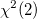

例えば、数人の学生の健康状態を調査したいとします。40人の学生の名前、年齢、性別、身長および体重のデータがあるとします。このような場合に、体重の分布が正規分布に従っているかを確認するのが正規性検定です。
統計モデルは通常、元になる仮定に依存します。母集団が正規分布であるという仮定は一般的なものです。残念なことに、多くの分析は、経験的実証 や検定なしで正規分布であると仮定して行われています。正規性の仮定が誤っている場合、推定したことがらは信頼できないものになる可能性があります。
分野や分析者によってニーズが異なるため、正規性試験の結果を解釈するための標準を定義することは困難です。ある分野では十分な検定方法でも、他の分野では不十分であることがあります。
正規性検定の解釈には、グラフィカルな手法と数値的な手法の2つがあります。グラフィカルな手法は、直感的で判断が容易な傾向があります。それに対して、数値的な手法はより正確で客観的なものです。
幹葉図、ボックスチャート（箱ひげ図）、ドットプロット、P-PまたはQ-Qプロットは、経験分布と理論正規分布間の違いを表現するのに役立ちます。Originの正規性の検定ツールは、ヒストグラムとボックスチャートを作図するオプションを利用できます。また、作図メニューからは、P-PまたはQ-Qプロットを作図できます。
特に、ヒストグラムを作成すれば、正規性を簡単に確認できます。正規分布の形状は、均整がとれたベル型であることが良く知られています。ヒストグラムを見ると、母集団分布の種類について大筋を確認できます。ボックスチャートは、ヒストグラムに情報を補足するものです。ボックスチャートは、最小、25パーセンタイル（第1四分位）、50パーセンタイル（中央値）、75パーセンタイル（第3四分位）、最大値をボックスと線を使用して効果的に表現したグラフです。25、75パーセンタイルが中央値に対して対称で、中央値と平均値がボックスの中心付近に位置している場合、データが正規分布であると考えることができます。上の body.dat データを使用したサンプルで得られたヒストグラムは、厳密には均整がとれているとは言えませんがベル型に近い形状をしています。ボックスチャートでは、ある程度の対称性を確認できます。
歪度と尖度は、正規性を検定するための指標です。歪度は一般に、3次の標本モーメント、対称性の度合いであると定義されます。歪度が0よりも大きい場合、分布が右に歪んでいて、分布曲線の左側により多くの観測値があります。反対に、歪度が0より小さい場合、多くの観測値が分布曲線の右側に位置しています。尖度（4次の標本モーメント）は、分布の鋭さを表します。正規分布の尖度は0であることに注意してください (過剰尖度の定義に依ります)そのため、尖度が0よりも大きい場合は正規分布に比べて尖っていて高いピークを持ちます。Originでは、歪度と尖度の双方を計算できます。詳細は、列の統計を確認してください。
経験分布関数（EDF）に基づいた Kolmogorov-Smirnov、Kolmogorov-Smirnov-Lilliefors、Anderson-Darling、Cramer-von Mises 検定 と、カイ二乗分布に基づいたJarque–Bera、Skewness-Kurtosis (aka D'Agostino K-二乗) 検定があります。Chen-Shapiro 検定は、正規化された空間ベースの、強力かつシンプルな手法です。Shapiro-Wilk、Ryan-JoinerおよびShapiro-Francia検定はChen-Shapiro検定と同じく、回帰と相関を利用した手法です。
Originでは、S-W、K-S、Lilliefors、A-D、D'Agostino-K2乗、C-S検定などの一般的に使用される手法を提供します。正規性検定では6つの手法から選択します。どの検定を選択するかは、下表を使用して判断できます。Originでは、Chen-Shapiro検定において、p値ではなく棄却値をレポートします。棄却値も同様に検定に使用できます。指定した統計値が、棄却率5%以下の場合、p値は0.05以上であることを示します。従って、α=0.05のための帰無仮説を否定するものではありません。
| 検定手法 | 統計 | N 範囲 | 分布 |
|---|---|---|---|
| Kolmogorov-Smirnov | D | 3 <= N | EDF |
| Lilliefors | L | 4 <= N | EDF |
| Anderson-Darling | A-square | 8 <= N | EDF |
| D'Agostino K-Squared | Chi-square | 4 <= N |  |
| Shapiro-Wilk | W | 3 <= N <= 5000 | - |
| Chen-Shapiro | QH | 10 <= N <= 2000 | - |
Note: サンプルサイズ（上表のN）の要件のみをみたすというだけでは、テスト結果が効率的かつ強力であることを保証するものではありません。ほとんどすべての正規性検定の手法において、小さいサンプルサイズ（30以下）では不十分です。